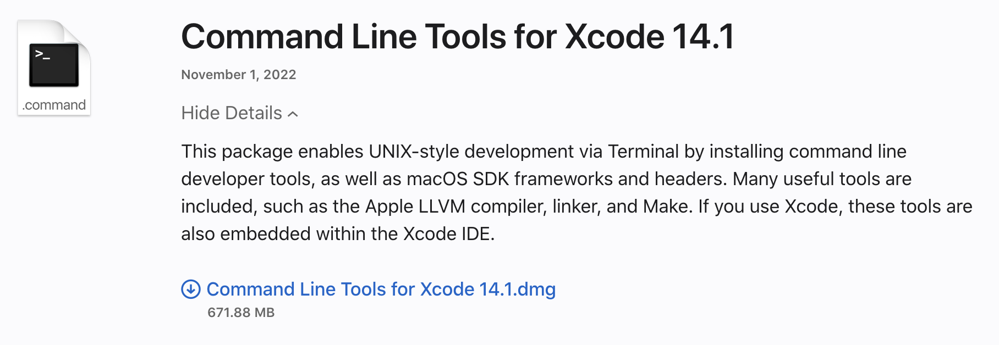

Created by: Chris Lindgren, PhD
Web Scraping with Python
I. Setting you up & understanding the legalities & ethics

Why learn how to scrape programmatically?
Case: List of emoticons from Wikipedia.
Three Main Methods
- Application Programming Interfaces
- Modules & Scripts
- Software Tools
Method 1. API
(Application Programming Interface)
An API provides people (clients) access to resources from another application or service (server), e.g., a set of data features about TikTok videos, based on a search query.
Endpoints & Access Tokens
- APIs provide "endpoints" for people/developers to use the provided data.
- Often requires an "access token"
API Examples
- TikTok's "Video Query"
- Twitter's "Filtered Stream"
- Kaggle's "Notebooks"
Method 2. Modules & Scripts
- Modules / Libraries: A set of code with methods and/or functions that fulfill a recurrent set of needs and goals.
- Scripts: Smaller code files that complete a specific task. Like scraping a page! :-)
Examples of Modules & Scripts
-
Python:
- General: Beautiful Soup, Scrapy, and Selenium (Selenium is actually a suite of tools that you can be used across multiple languages.)
- Specific: Pyktok scrapes video, text, and metadata from Tiktok with no authentication.
- R: rvest
Method 3. Existing Tools
Software tools exist that use APIs to automate the process, such as MassMine.
MassMine: Command line tool designed for researchers to simplify the collection and use of data from online sources such as social media networks
Scraping Legalities & Ethics
Can I / should I do it?
Yes, but it's tricky
Solution
Get acquainted with what computational social scientists are recommending and doing
Be informed about TOS cases
"Post-API Age"
"When companies can restrict or eliminate API access at any time, for any reason, and without any recourse, computational researchers and students need to seriously consider how to proceed. We find ourselves in a situation where heavy investment in teaching and learning platform-specific methods can be rendered useless overnight: This is what I mean by 'the post-API age.'" (Freelon, 2018, p. 665)
Be informed about legal cases
Internet Researcher Sandvig: Case No. 1:16-cv-1368
Although no adverse action has been taken against any of the plaintiffs, even though some have already engaged in the proposed information-gathering activity, they seek to raise a preenforcement challenge to the constitutionality of a provision of the Computer Fraud and Abuse Act (“CFAA”), 18 U.S.C. § 1030(a)(2)(C), under the theory that the provision runs afoul of the First and Fifth Amendments to the United States Constitution. (p. 8)
Isn't this TOS-problem a big ole "Nope. We can't do this."?
"... a cursory investigation of the history of web scraping reveals the area to be heavily contested and in many cases untested in legal process ... [J]udges have taken a lenient view where the scraping has been performed against user generated data that is publically viewable." (Perriam et al., 2020, p. 21)
Case: HiQ vs. Linkedin
"HiQ violated Linkedin terms of service by scraping user details from the site, [but] judges ruled in favour of HiQ by supporting HiQ's counter claim that Linkedin's blocking of their scrapers amounted to anti-competitive practices" (p. 21)
Case: Whotargets.me
- scrapes political ads from user's social news feeds
- sends ads to a central location for analysis
- Generates report for user about how political groups have been microtargeting them and compares them against geo/demographic groups
Whotargets.me violates the ToS. Yet, "the service claims 20,000 users in over 80 countries, with their work heavily cited in the press" (Perriam et al., 2020, p. 22).
1. Use Authorized Methods Whenever Possible (APIs)
2. Understand the Risks of Violating TOS
- Companies can blacklist you
- Companies can file lawsuits: Aaron Swartz's 2013 CFAA prosecution - max 50 years and $1 million fine
3. TOS Compliance != Human Subject Compliance
- TOS Compliance == "respecting the business prerogatives" (Freelon, p. 667)
- Subjects Compliance == "respecting the dignity and privacy of the platform's users" (Freelon, p. 667)
Re: Human Subject Compliance
- How does your scraping plan account for the collection and retention of sensitive information from vulnerable populations?
- How can researchers apply and transform standard researcher subjects compliance practices?
- How can researchers continue to develop IRB channels to understand and assess exempt vs. non-exempt studies?
Requirements
MAC Requirements
(src: docs.python-guide.org)
WINDOWS Requirements
(src: realpython.com)
Follow the below tutorial and be sure to select the "Add to path" option.
- Install Python 3 with the "Full Installer"
Code Editor
I recommend installing VS Code.
Setup Breakout Sessions
- MAC
- WINDOWS
Apple Dev Account
Sign up for an Apple Developer account with your Apple ID.
Xcode
Download and install Xcode.
Install Homebrew
Open "Terminal" and copy/paste the following into it:
/bin/bash -c "$(curl -fsSL https://raw.githubusercontent.com/Homebrew/install/HEAD/install.sh)"Install pyenv with Homebrew
pynev will help you switch between multiple versions of Python on your computer.
brew install pyenvConfigure your Mac's environment
Configure your environmental variables, so pyenv manages your packages
echo 'eval "$(pyenv init -)"' >> ~/.bash_profilethen
source ~/.bash_profileCheck Python 3 versions with pyenv
pyenv versionsSet Python 3 version with pyenv
pyenv global 3.9.8Check the Python Version
Open "Terminal" and write the following:
python -VPython 2.7
or
python3 -VPython 3.9.8